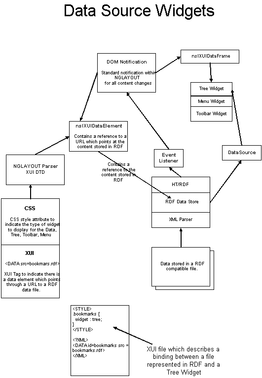

|
|
|
10-23-98 (Kevin McCluskey, Rod Spears) XPFE Requirements
A small set of widgets within XPFE will be built as DataSource Widgets. These widgets include tree controls, toolbars, and menus. Rather than maintaining their content directly, they will talk through a DataSource interface to get their contents. This allows the data which describes their contents to received from various sources. This way a single copy of the data can be maintained which eliminates the need to keep the external data and the data stored by the widget synchronized. The widgets will talk through a DataSource interface which points directly at the external data. This is essentially a Model/View/Controller paradigm, except the View and Controller are merged. This document describes how DataSource widgets will be integrated with NGLAYOUT and the rest of XPFE. <Data> Tag A <DATA> tag will be added to the XUI XML grammer. Its purpose is to pointer to a DataSource using a URL. <DATA id = "bookmarks" src = "rdfstore.bookmarks.local"> The DATA element will participate in layout but the actual widget used to represent the data source would be stored as a new XUI-CSS attribute widget. CSS Style CSS Style within the XUI document binds the data element to a particular widget. If no default style is selected a tree widget is used to render the data. <STYLE>
Data Format The Data stored in the DataSource would be hierarchical and include a class id and id which would allow the contents of the DataSource to be bound to CSS attributes. The class id for containers stored within the DataStore would be fixed to be .container. For example, to specify the folders for the tree widgets the following would be used: <STYLE>
.container {
Changing the widget used to view content The contents of the data source could be viewed as a menu simply by changing the style and having a XUI menubar which was defined as follows. <STYLE>
<?XML-XUI> <MENUBAR>
Extending to other widgets Initially only the tree widget, menu, and toolbar will be implemented as DataSource widgets. These widgets will commonly have their contents defined by external sources. In the future other widgets could become data source widgets. Non-external sources Each of the DataSource widgets will include DataSource class which actually stores the contents of the widget without relying on an external data source to provide content for it. Integration with NGLAYOUT 
NGLAYOUT XUI-DTD The XUI-DTD consumes a XUI document and creates a nsXUIDataElement in the content model. The nsXUIDataElement contains a URL which is a reference to a node within the RDF data store. HT/RDF RDF data store contains data from a XML-grammer that describes hierarchical data such as bookmarks. CSS CSS style contains attributes to describe a particular widget, icons, and other stylistic attributes for presenting data. The Frame associated with with ns nsXUIData Element. nsXUIDataFrame The nsXUIDataFrame creates the appropriate widget and sets attributes on it based on information stored in the CSS style system. Event Listeners Multiple data files can be read into the RDF Data Store. RDF will combine this data and generate events to indicate how the data store has changed. An event listener is registered with the RDF Data Store to relay events to the standard DOM Notification mechanism within NGLAYOUT. DOM Notification When the data has changed within RDF the DOM is notified. The DOM relays the modification events to the nsXUIDataElementFrame. The nsXUIDataElementFrame updates the Widget it was associated with to reflect the change in the Data. DataSource Provides abstraction for accessing data from various sources. Native Widgets Native widgets typically hold their own content. They do not usually
allow for their data to come from some other source such as a DataSource.
For these widgets the data will be duplicated. When event notification
is received by the nsXUIDataFrame the widget's contents will be purged
and updated from the DataSource.
|
|||||||
| Copyright © 1998 The Mozilla Organization. | ||||||||